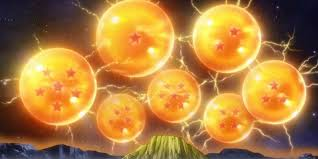

Popular Story Arcs
Mr.Ditkovich has appeared in many popular story arcs, in both the movies and the manga. His most popular arcs are in the "Rivals United" arc where he teamed up with his rival Mr.Aziz, in order to save all of New York and the world, after Peter Parker (aka.Spider Man) died at the hands of Thanos. The mighty duo did win after Mr.Aziz screamed "Stop Stop Stop!" at Thanos, making him unable to move for a short period of time, while Mr.Ditkovich used 99.9% of his power to turn the Earth, and everything on it into a giant pile of cash. Once that was done, Mr.Ditkovich and Mr.Aziz went back in time using Mr.Ditkovich's time warping abilities. Then they trapped Thanos and his allies in a giant bubble thanks to the mega-hyper-bubble-canonn, that they stole from Tony Stark. They were able to contrate the snap into that small bubble, saving the Earth and defeating Thanos. Mr.Ditkovich later used the Dragon Balls to bring Peter back to life, after asking for rent.
